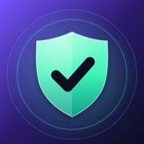

Kalkan · Destek
İletişim / Contact: apps.support.mm@gmail.com
SMS filtresini açma
- Ayarlar › Uygulamalar › Mesajlar › Bilinmeyen ve İstenmeyen
- Mesaj Filtresi bölümünde Kalkan'ı seç.
Kısayol: Mesajlar uygulamasında filtre düğmesi › Filtrelemeyi Yönet.
Arama engellemeyi açma
- Ayarlar › Uygulamalar › Telefon › Arama Engelleme/No. Belirleme
- İki Kalkan anahtarını da aç.
Sık sorulanlar
Rehberimdeki birinin mesajı filtrelenir mi? Hayır. iOS, kişilerindeki göndericilerin mesajlarını filtre uygulamalarına hiç göstermez.
Neden kaç mesaj engellendiğini göremiyorum? iOS gizlilik gereği filtre uzantısının veri kaydetmesine izin vermez. Filtrelenen mesajlar Mesajlar › Filtreler altındadır.
Bir mesaj yanlış klasöre düştü. Kalkan'ın Test ekranına yapıştırıp nedenini gör, ardından bir izin ya da engel kuralı ekle.
Support (English)
Turn on the SMS filter in Settings › Apps › Messages › Unknown & Spam › Text Message Filter › Kalkan. Turn on call blocking in Settings › Apps › Phone › Call Blocking & Identification. Texts from your contacts are never filtered, and iOS does not let filter apps count filtered messages.